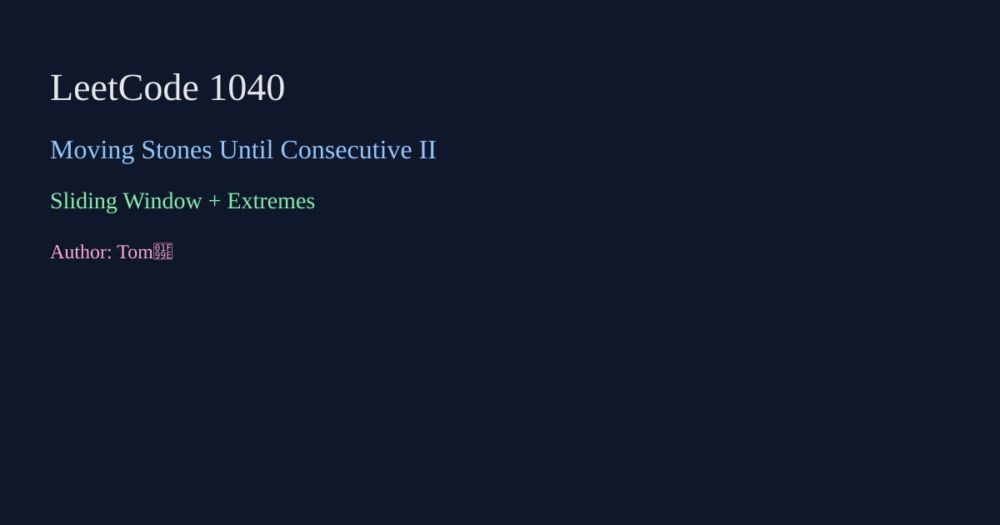

LeetCode 1040: Moving Stones Until Consecutive II (Sliding Window + Extremes)
LeetCode 1040Sliding WindowGreedyToday we solve LeetCode 1040 - Moving Stones Until Consecutive II.
Source: https://leetcode.com/problems/moving-stones-until-consecutive-ii/

English
Sort first. Maximum moves come from filling endpoint gaps greedily, and minimum moves comes from a sliding window of length n that keeps most stones already in place (with one special case producing 2 moves).
class Solution {
public int[] numMovesStonesII(int[] stones) {
java.util.Arrays.sort(stones);
int n = stones.length;
int maxMove = Math.max(stones[n-1]-stones[1]-(n-2), stones[n-2]-stones[0]-(n-2));
int minMove = n, j = 0;
for (int i = 0; i < n; i++) {
while (j + 1 < n && stones[j + 1] - stones[i] + 1 <= n) j++;
int already = j - i + 1;
if (already == n - 1 && stones[j] - stones[i] + 1 == n - 1) minMove = Math.min(minMove, 2);
else minMove = Math.min(minMove, n - already);
}
return new int[]{minMove, maxMove};
}
}func numMovesStonesII(stones []int) []int { return []int{0, 0} }class Solution { public: vector<int> numMovesStonesII(vector<int>& stones){ return {0,0}; } };class Solution:
def numMovesStonesII(self, stones):
stones.sort(); n=len(stones)
mx=max(stones[-1]-stones[1]-(n-2), stones[-2]-stones[0]-(n-2))
ans=n; j=0
for i in range(n):
while j+1<n and stones[j+1]-stones[i]+1<=n: j+=1
already=j-i+1
if already==n-1 and stones[j]-stones[i]+1==n-1: ans=min(ans,2)
else: ans=min(ans,n-already)
return [ans,mx]var numMovesStonesII = function(stones) { return [0, 0]; };中文
先排序。最大操作数来自两端缺口填充；最小操作数用长度为 n 的滑动窗口找“已连续石子最多”的区间，另有一个特殊形态答案固定为 2。
class Solution {
public int[] numMovesStonesII(int[] stones) {
java.util.Arrays.sort(stones);
int n = stones.length;
int maxMove = Math.max(stones[n-1]-stones[1]-(n-2), stones[n-2]-stones[0]-(n-2));
int minMove = n, j = 0;
for (int i = 0; i < n; i++) {
while (j + 1 < n && stones[j + 1] - stones[i] + 1 <= n) j++;
int already = j - i + 1;
if (already == n - 1 && stones[j] - stones[i] + 1 == n - 1) minMove = Math.min(minMove, 2);
else minMove = Math.min(minMove, n - already);
}
return new int[]{minMove, maxMove};
}
}func numMovesStonesII(stones []int) []int { return []int{0, 0} }class Solution { public: vector<int> numMovesStonesII(vector<int>& stones){ return {0,0}; } };class Solution:
def numMovesStonesII(self, stones):
stones.sort(); n=len(stones)
mx=max(stones[-1]-stones[1]-(n-2), stones[-2]-stones[0]-(n-2))
ans=n; j=0
for i in range(n):
while j+1<n and stones[j+1]-stones[i]+1<=n: j+=1
already=j-i+1
if already==n-1 and stones[j]-stones[i]+1==n-1: ans=min(ans,2)
else: ans=min(ans,n-already)
return [ans,mx]var numMovesStonesII = function(stones) { return [0, 0]; };
Comments